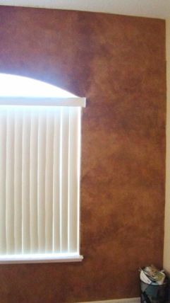

HI SANDY,
WELL, I MADE AN ATTEMPT TO START, ALL ATTEMPTS HAVE FAILED. I DON’T KNOW IF THE PROBLEM IS THE COLORS OR JUST ME.
I HAD PAINTED MY DAUGHTERS ROOM “ONION” WHICH IS A LIGHT TAN IN EGGSHELL A WHILE BACK AND THOUGHT ONE WALL WAS A GREAT FIRST TRY. WELL, I GOT A FAUX GLAZE IN A LATEX WHICH WAS VERY THICK (?) AND I GOT TURKISH COFFEE AND A DARK BROWN WHICH TURNED TO AN UGLY YELLOW MUSTARD AFTER ABOUT 15 MINUTES BUT I THOUGHT I’D TRY IT. I USED THE TOOL AND JUST DIVIDED THE COLORS ON THE PALETTE. I PRESSED THE PALETTE ON THE WALL 4 TIMES ABOUT 2 INCHES APART AND USED THE PUFFY TO BLEND IT OUT.
YUCK IT LOOKED HORRIBLE!!!! THAT BROWN/YELLOW (WHATEVER IT WAS HAHA) LOOKED TERRIBLE BUT THE WHOLE THING LOOKED HORRIBLE. SO I PAINTED OVER IT.
TODAY ATTEMPT #2 I TRIED JUST THE TURKISH COFFEE ALONE AND IT LOOKED MUDDY AND ALL I CAN SEE IS LINES FROM THE TOP OF THE PUFFY PAD.
SO I TRIED WASHING WHEN YOU MEAN “LITERALLY” WASHING THE WALL, YOU MEAN TAKING THE PUFFY AND PRESS IT INTO THE PALETTE AND WASHING AS IF I HAD THE KITCHEN SPONGE AND WASHING THE WALL DOWN (NOT SCRUBBING) JUST WASHING IIKE WASHING A DISH, ALSO IT’S A TEXTURED (KNOCKDOWN)…. THAT SEEMS SOMEWHAT OK JUST VERY VERY LIIGHT - IT JUST LOOKS LIKE THE WALL IS DIRTY.
DO YOU HAVE ANY IDEA WHAT I AM DOING WRONG??? I AM OPEN TO ANY KIND OF ADVICE YOU CAN GIVE.
THANKS
DAWN NOONE
Hey Dawn,
Good for you for getting past the starting place...lol As I say in the DVD, it's always best to practice on a poster board first. I rarely start on the walls, cause if you don't like it, you have to paint over. Paint a poster board with the base coat. Don't load the whole palette, just a section or two with the color. Try out a section of the board to see the color. Dry with a hair dryer so you can see it as it looks when dry cause the colors darken when they dry. Then add glaze if too dark or more paint if too light. The eggshell is fine for the base coat but it does make the glaze dry faster than SATIN. So don't press the palette but once on the wall so you have time to wash out the colors. If your glaze is drying too soon, try adding glycerin or acrylic extender which you can purchase at any craft or art store. You just need a 2 ounce bottle. You can find the gylcerin at Michaels in the baking department. Adding a tablespoon of water can help if you can't find the glycerin or extender. Because you have a knockdown, then you have to press and wash with the poofy pad or the color doesn't get into the crevices as well.
I am so sorry that the color didn't look right but that's usually the hardest to get right.
By the way, when you said you got the glaze in a latex, are you meaning the paint that mixes with the glaze? What clear glaze did you buy? Maybe you should try with Floetrol, a paint conditioner that can be used as a glaze. Let me know. Get the poster boards and don't attempt the walls just yet.
Here to help. God bless,
Sandy
Hi Sandy I am so sorry I haven’t responded until now. I was supposed to go for back surgery and I didn’t make it through the medical clearance as I have an irregular EKG. I have been to the cardiologist and he believes that what I show is a false positive, I have to go through one more test to prove that. I am actually glad that I didn’t go through with the back surgery anyway. I was very unhappy with the facility I was dealing with.
Anyway, I did one wall in my daughters bedroom, I am going to forward you the pictures. I followed your color combination – Fireweed, Turkish and Florentine Brass on a beige wall. As you’ll see it didn’t come out like your old world parchment look. I am wondering why – yours looks so light and it’s not heavy like yours. I followed the video on Old World parchment. I used the puffy to blend out the colors.
I like how it came out but I don’t understand why it’s so heavy looking compared to your look.
Any advice is welcome (believe me!!!!!) haha………
When I look at your e-book of colors (Old Parchment World) and I look at the middle look (I think it’s a bathroom) it’s just so different than what I did. It’s such a light look.
I have a ½ bath that I want to do in a burgundy and gold look – any suggestions????? Base coat?? Also, I tried to do the stone wall on a practice board – what a disaster!!!!! Do you have to wait a while before pouncing out the colors???
Sorry for all the questions but I just love doing this kind of painting – I have wanted to do this for years and have gone to paint store and looked at the little brochures and thought this was way over my head, I better stick to one color rooms – yuck!!!!!! And ceramics – which I absolutely love to do.
I will forward pictures of the wall I did…..
Thank You Sandy!!!!!
Dawn Noone

Hey Dawn,
My mom and I lifted you up to the Lord this morning. May the Lord heal you and you don't have to have the operation. It's amazing that you were able to paint with a bad back. I want to tape a video with tips on faux painting, like lift a little weight a couple of times a week to strengthen back, legs and arms cause faux painting can be strenuous at times. It keeps me in shape. ha ha
As I said before, the wall you did looks great. In fact, most people I have done that finish for, have wanted it darker that what I have in my pictures online. What you did is what they look for as it looks richer. Did you practice on a board first? I always practice first to see if the finish is too dark so that I can adjust the amount of glaze. Another thing that makes a difference is how close the sections are that you press the palette to. In other words, more separation between the pressed palette prints means less glaze in a section which makes it blend out more lighter and less textured....the closer means you have more glaze to blend out and you tend to get a darker, more textured finish. The seams show up a little less with a darker finish. You could always do the rest of the walls with double the amount of glaze than you used before. I have never used Valspar; maybe it is much thicker than what I usually use, which is Floetrol, a paint conditioner. It's not thick at all.
As for the stone look - which one...the cobblestone or faux brick one? If cobblestone, yes you should wait until the glaze is almost dry so you keep the shape of the pressed palette. Kind of tricky as every glaze and paint is different. I use a hair dryer if it's taking too long to dry. If the brick, then you must wait to add a wash over the pressed sponge or tuck and gather prints. Not sure which one you mean.
As for the 1/2 bath, do you mean a metallic gold or yellow gold like the wall you did? If you do the yellow gold, then use the same color Florentine Brass and the Fireweed. If you wall is already in a satin white or off white, you can use that but you will need to do an extra coat to darken the finish. If you need to paint it, then use 6108 Latte for the base coat so it comes out deeper. Get just a quart of the Colors to Go and try it out on a board first. If you want to use metallic gold, keep this in mind - no light, no shine. You must have light in there or you will not see the gold. I would put that on top with a sponge, very lightly in various places AFTER THE FINISH IS TOTALLY DRY. I haven't had too much success with the metallics as most homes don't have bright light all over and it's a waste to use it when it doesn't show up.
Hope all this helps. Let me know how you do. Send me more pics and a short testimony so I can include on my site....if you don't mind. I will also place a copy of these letters on the site to help others.
Thanks and God bless,
Sandy
Hi Sandy,
Thank you for the prayers – it means so much to me!!!! And yes, my back really felt it when I did my daughters room.
I am sorry – I had meant the “stone wall” that you did on the video. It seems so easy on the video because your palette is the shapes of stones which helps. I tried it on a practice board, after I pressed the palette 4 times, I immediately tried to pounce out in between the stones– I think that may have been my problem.
For the bathroom, I had meant a metallic gold paint – I was going to try using an acrylic paint (like I use for my ceramics). There is no light in that bathroom though. When you tried using gold I’m surprised that you couldn’t see the gold show up over a dark color. The paint in there is a flat white that the builder used so I’ll get the Latte. I wanted to use Burgundy – wouldn’t Fireweed be to red????
Yes, Valspar is a pretty thick glaze, I am going to get the paint conditioner next time. I wonder if Lowes sells Floetrol. I’m thinking that’s why it went on heavy, thick and busy in my daughters room, don’t get me wrong I like how her wall came out, but I like how your’s looks a lot better - I love all the things I’ve seen you paint, you are a VERY VERY talented lady - that’s for sure!!!! God definitely blessed you.
I was wondering why your’s isn’t so heavy looking, maybe it’s because the glaze is so thick. So, you think I did ok for my first try?? The truth is I almost threw my hands up but I figured I’d e-mail you – that was the first time I e-mailed you and yelled “help” – remember that?? Then I got your e-mail, took a deep breath and gave it my best shot.
You just have no idea how long I have wanted to learn this type of painting, so it was a blessing when I found you on the internet. I love to paint, it’s a true passion and I’ve been told numerous times that I should sell my ceramics because they are so good but I have always wanted to learn faux painting. I think anyone can slap paint on walls, but to do the faux – it takes artistry. I’m just not sure yet if I have the artistry it takes to do this type of painting.
Have a Good evening,
Dawn

(This kit includes Basic, Faux Marble, Faux Wood Kit and tools for texturing)
*FREE Priority Shipping and Color Idea E-book